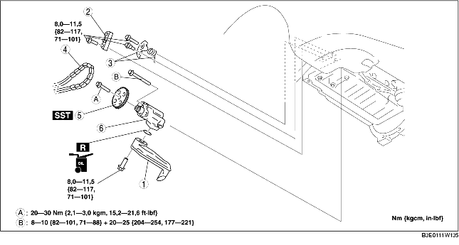

1. Verwijder de accukap. (Zie VERWIJDEREN/PLAATSEN ACCU [LF].)
2. Neem de minkabel van de accu los.
3. Verwijder de beschermplaat en het spatscherm als één geheel.
4. Verwijder het voorwiel (R).
5. Tap de motorolie af. (Zie VERVERSEN MOTOROLIE [LF].)
6. Verwijder de afdekplaat. (Zie VERWIJDEREN/PLAATSEN AFDEKPLAAT [LF].)
7. Verwijder de aandrijfriem. (Zie VERVANGEN AANDRIJFRIEM [LF].)
8. Plaats het expansievat ergens waar het niet in de weg zit.
9. Verwijder de aircocompressor, maar neem de leidingen niet los. (Zie VERWIJDEREN/PLAATSEN AIRCOCOMPRESSOR [LF].)
10. Verwijder de bobine. (Zie VERWIJDEREN/PLAATSEN BOBINES [LF].)
11. Verwijder de bougies. (Zie VERWIJDEREN/PLAATSEN/BOUGIES [LF].)
12. Plaats de gaskabelsteun ergens waar hij niet in de weg zit.
13. Verwijder de krukassensor. (Zie VERWIJDEREN/PLAATSEN KRUKASSENSOR [LF].)
14. Verwijder het voorste distributiedeksel. (Zie VERWIJDEREN/PLAATSEN DISTRIBUTIEKETTING [LF].)
15. Verwijder de carterpan. (Zie CARTERPAN VERWIJDEREN/PLAATSEN [LF].)
16. Verwijder de onderdelen in de aangegeven volgorde, zie de tabel.
17. Plaats de onderdelen in omgekeerde volgorde.
18. Vul de motor met de voorgeschreven soort en hoeveelheid motorolie. (Zie VERVERSEN MOTOROLIE [LF].)
19. Start de motor en controleer op olielekkage.
20. Controleer het oliepeil. (Zie CONTROLE MOTOROLIEPEIL [LF].)
21. Controleer het ontstekingstijdstip en het stationair toerental. (Zie MOTORAFSTELLING [LF].)

.
|
1
|
Oliezeef
|
|
2
|
Kettinggeleider
|
|
3
|
Kettingspanner en veer
|
|
4
|
Ketting oliepomp
|
|
5
|
Tandwiel oliepomp
|
|
6
|
Oliepomp
|
1. Plaats SST op het tandwiel van de oliepomp om te voorkomen dat de oliepomp draait.
1. Draai de bouten van de oliepomp in twee stappen vast in de aangegeven volgorde.